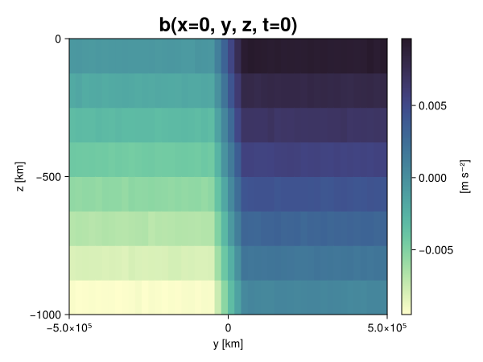
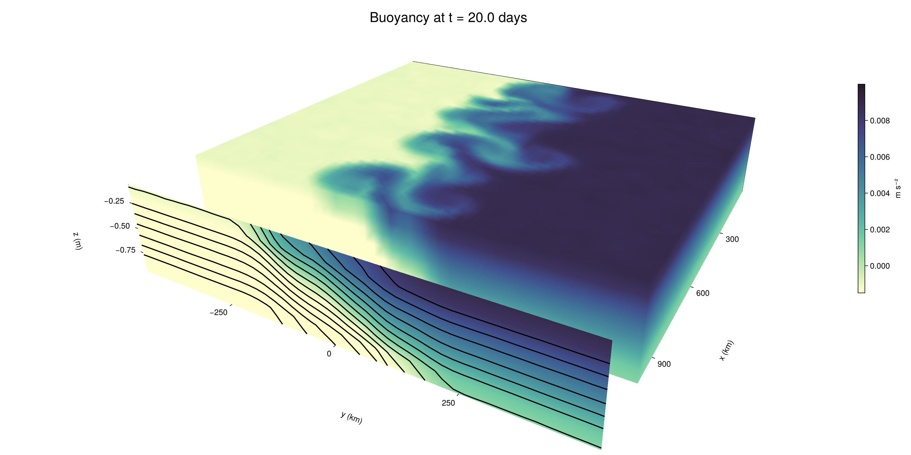

Baroclinic adjustment
In this example, we simulate the evolution and equilibration of a baroclinically unstable front.
Install dependencies
First let's make sure we have all required packages installed.
using Pkg
pkg"add Oceananigans, CairoMakie"using Oceananigans
using Oceananigans.UnitsGrid
We use a three-dimensional channel that is periodic in the x direction:
Lx = 1000kilometers # east-west extent [m]
Ly = 1000kilometers # north-south extent [m]
Lz = 1kilometers # depth [m]
grid = RectilinearGrid(size = (48, 48, 8),
x = (0, Lx),
y = (-Ly/2, Ly/2),
z = (-Lz, 0),
topology = (Periodic, Bounded, Bounded))48×48×8 RectilinearGrid{Float64, Periodic, Bounded, Bounded} on CPU with 3×3×3 halo
├── Periodic x ∈ [0.0, 1.0e6) regularly spaced with Δx=20833.3
├── Bounded y ∈ [-500000.0, 500000.0] regularly spaced with Δy=20833.3
└── Bounded z ∈ [-1000.0, 0.0] regularly spaced with Δz=125.0Model
We built a HydrostaticFreeSurfaceModel with an ImplicitFreeSurface solver. Regarding Coriolis, we use a beta-plane centered at 45° South.
model = HydrostaticFreeSurfaceModel(; grid,
coriolis = BetaPlane(latitude = -45),
buoyancy = BuoyancyTracer(),
tracers = :b,
momentum_advection = WENO(),
tracer_advection = WENO())HydrostaticFreeSurfaceModel{CPU, RectilinearGrid}(time = 0 seconds, iteration = 0)
├── grid: 48×48×8 RectilinearGrid{Float64, Periodic, Bounded, Bounded} on CPU with 3×3×3 halo
├── timestepper: QuasiAdamsBashforth2TimeStepper
├── tracers: b
├── closure: Nothing
├── buoyancy: BuoyancyTracer with ĝ = NegativeZDirection()
├── free surface: ImplicitFreeSurface with gravitational acceleration 9.80665 m s⁻²
│ └── solver: FFTImplicitFreeSurfaceSolver
├── advection scheme:
│ ├── momentum: WENO(order=5)
│ └── b: WENO(order=5)
└── coriolis: BetaPlane{Float64}We start our simulation from rest with a baroclinically unstable buoyancy distribution. We use ramp(y, Δy), defined below, to specify a front with width Δy and horizontal buoyancy gradient M². We impose the front on top of a vertical buoyancy gradient N² and a bit of noise.
"""
ramp(y, Δy)
Linear ramp from 0 to 1 between -Δy/2 and +Δy/2.
For example:
```
y < -Δy/2 => ramp = 0
-Δy/2 < y < -Δy/2 => ramp = y / Δy
y > Δy/2 => ramp = 1
```
"""
ramp(y, Δy) = min(max(0, y/Δy + 1/2), 1)
N² = 1e-5 # [s⁻²] buoyancy frequency / stratification
M² = 1e-7 # [s⁻²] horizontal buoyancy gradient
Δy = 100kilometers # width of the region of the front
Δb = Δy * M² # buoyancy jump associated with the front
ϵb = 1e-2 * Δb # noise amplitude
bᵢ(x, y, z) = N² * z + Δb * ramp(y, Δy) + ϵb * randn()
set!(model, b=bᵢ)Let's visualize the initial buoyancy distribution.
using CairoMakie
# Build coordinates with units of kilometers
x, y, z = 1e-3 .* nodes(grid, (Center(), Center(), Center()))
b = model.tracers.b
fig, ax, hm = heatmap(view(b, 1, :, :),
colormap = :deep,
axis = (xlabel = "y [km]",
ylabel = "z [km]",
title = "b(x=0, y, z, t=0)",
titlesize = 24))
Colorbar(fig[1, 2], hm, label = "[m s⁻²]")
fig
Simulation
Now let's build a Simulation.
simulation = Simulation(model, Δt=20minutes, stop_time=20days)Simulation of HydrostaticFreeSurfaceModel{CPU, RectilinearGrid}(time = 0 seconds, iteration = 0)
├── Next time step: 20 minutes
├── Elapsed wall time: 0 seconds
├── Wall time per iteration: NaN days
├── Stop time: 20 days
├── Stop iteration: Inf
├── Wall time limit: Inf
├── Callbacks: OrderedDict with 4 entries:
│ ├── stop_time_exceeded => Callback of stop_time_exceeded on IterationInterval(1)
│ ├── stop_iteration_exceeded => Callback of stop_iteration_exceeded on IterationInterval(1)
│ ├── wall_time_limit_exceeded => Callback of wall_time_limit_exceeded on IterationInterval(1)
│ └── nan_checker => Callback of NaNChecker for u on IterationInterval(100)
├── Output writers: OrderedDict with no entries
└── Diagnostics: OrderedDict with no entriesWe add a TimeStepWizard callback to adapt the simulation's time-step,
conjure_time_step_wizard!(simulation, IterationInterval(20), cfl=0.2, max_Δt=20minutes)Also, we add a callback to print a message about how the simulation is going,
using Printf
wall_clock = Ref(time_ns())
function print_progress(sim)
u, v, w = model.velocities
progress = 100 * (time(sim) / sim.stop_time)
elapsed = (time_ns() - wall_clock[]) / 1e9
@printf("[%05.2f%%] i: %d, t: %s, wall time: %s, max(u): (%6.3e, %6.3e, %6.3e) m/s, next Δt: %s\n",
progress, iteration(sim), prettytime(sim), prettytime(elapsed),
maximum(abs, u), maximum(abs, v), maximum(abs, w), prettytime(sim.Δt))
wall_clock[] = time_ns()
return nothing
end
add_callback!(simulation, print_progress, IterationInterval(100))Diagnostics/Output
Here, we save the buoyancy, $b$, at the edges of our domain as well as the zonal ($x$) average of buoyancy.
u, v, w = model.velocities
ζ = ∂x(v) - ∂y(u)
B = Average(b, dims=1)
U = Average(u, dims=1)
V = Average(v, dims=1)
filename = "baroclinic_adjustment"
save_fields_interval = 0.5day
slicers = (east = (grid.Nx, :, :),
north = (:, grid.Ny, :),
bottom = (:, :, 1),
top = (:, :, grid.Nz))
for side in keys(slicers)
indices = slicers[side]
simulation.output_writers[side] = JLD2OutputWriter(model, (; b, ζ);
filename = filename * "_$(side)_slice",
schedule = TimeInterval(save_fields_interval),
overwrite_existing = true,
indices)
end
simulation.output_writers[:zonal] = JLD2OutputWriter(model, (; b=B, u=U, v=V);
filename = filename * "_zonal_average",
schedule = TimeInterval(save_fields_interval),
overwrite_existing = true)JLD2OutputWriter scheduled on TimeInterval(12 hours):
├── filepath: baroclinic_adjustment_zonal_average.jld2
├── 3 outputs: (b, u, v)
├── array type: Array{Float64}
├── including: [:grid, :coriolis, :buoyancy, :closure]
├── file_splitting: NoFileSplitting
└── file size: 31.6 KiBNow we're ready to run.
@info "Running the simulation..."
run!(simulation)
@info "Simulation completed in " * prettytime(simulation.run_wall_time)[ Info: Running the simulation...
[ Info: Initializing simulation...
[00.00%] i: 0, t: 0 seconds, wall time: 28.491 seconds, max(u): (0.000e+00, 0.000e+00, 0.000e+00) m/s, next Δt: 20 minutes
[ Info: ... simulation initialization complete (26.356 seconds)
[ Info: Executing initial time step...
[ Info: ... initial time step complete (20.461 seconds).
[06.94%] i: 100, t: 1.389 days, wall time: 45.721 seconds, max(u): (1.327e-01, 1.180e-01, 1.558e-03) m/s, next Δt: 20 minutes
[13.89%] i: 200, t: 2.778 days, wall time: 6.586 seconds, max(u): (2.299e-01, 1.882e-01, 1.907e-03) m/s, next Δt: 20 minutes
[20.83%] i: 300, t: 4.167 days, wall time: 6.279 seconds, max(u): (3.197e-01, 2.646e-01, 1.957e-03) m/s, next Δt: 20 minutes
[27.78%] i: 400, t: 5.556 days, wall time: 6.280 seconds, max(u): (3.715e-01, 3.396e-01, 1.882e-03) m/s, next Δt: 20 minutes
[34.72%] i: 500, t: 6.944 days, wall time: 6.588 seconds, max(u): (4.467e-01, 3.810e-01, 2.020e-03) m/s, next Δt: 20 minutes
[41.67%] i: 600, t: 8.333 days, wall time: 6.436 seconds, max(u): (5.544e-01, 5.423e-01, 2.113e-03) m/s, next Δt: 20 minutes
[48.61%] i: 700, t: 9.722 days, wall time: 6.749 seconds, max(u): (7.817e-01, 9.262e-01, 2.853e-03) m/s, next Δt: 20 minutes
[55.56%] i: 800, t: 11.111 days, wall time: 6.457 seconds, max(u): (1.100e+00, 1.195e+00, 3.576e-03) m/s, next Δt: 20 minutes
[62.50%] i: 900, t: 12.500 days, wall time: 7.056 seconds, max(u): (1.475e+00, 1.209e+00, 5.244e-03) m/s, next Δt: 20 minutes
[69.44%] i: 1000, t: 13.889 days, wall time: 6.636 seconds, max(u): (1.400e+00, 1.348e+00, 3.991e-03) m/s, next Δt: 20 minutes
[76.39%] i: 1100, t: 15.278 days, wall time: 6.641 seconds, max(u): (1.417e+00, 1.090e+00, 4.142e-03) m/s, next Δt: 20 minutes
[83.33%] i: 1200, t: 16.667 days, wall time: 6.720 seconds, max(u): (1.354e+00, 1.190e+00, 3.425e-03) m/s, next Δt: 20 minutes
[90.28%] i: 1300, t: 18.056 days, wall time: 5.927 seconds, max(u): (1.334e+00, 1.293e+00, 2.871e-03) m/s, next Δt: 20 minutes
[97.22%] i: 1400, t: 19.444 days, wall time: 7.228 seconds, max(u): (1.361e+00, 1.310e+00, 2.847e-03) m/s, next Δt: 20 minutes
[ Info: Simulation is stopping after running for 2.432 minutes.
[ Info: Simulation time 20 days equals or exceeds stop time 20 days.
[ Info: Simulation completed in 2.433 minutes
Visualization
All that's left is to make a pretty movie. Actually, we make two visualizations here. First, we illustrate how to make a 3D visualization with Makie's Axis3 and Makie.surface. Then we make a movie in 2D. We use CairoMakie in this example, but note that using GLMakie is more convenient on a system with OpenGL, as figures will be displayed on the screen.
using CairoMakieThree-dimensional visualization
We load the saved buoyancy output on the top, north, and east surface as FieldTimeSerieses.
filename = "baroclinic_adjustment"
sides = keys(slicers)
slice_filenames = NamedTuple(side => filename * "_$(side)_slice.jld2" for side in sides)
b_timeserieses = (east = FieldTimeSeries(slice_filenames.east, "b"),
north = FieldTimeSeries(slice_filenames.north, "b"),
top = FieldTimeSeries(slice_filenames.top, "b"))
B_timeseries = FieldTimeSeries(filename * "_zonal_average.jld2", "b")
times = B_timeseries.times
grid = B_timeseries.grid48×48×8 RectilinearGrid{Float64, Periodic, Bounded, Bounded} on CPU with 3×3×3 halo
├── Periodic x ∈ [0.0, 1.0e6) regularly spaced with Δx=20833.3
├── Bounded y ∈ [-500000.0, 500000.0] regularly spaced with Δy=20833.3
└── Bounded z ∈ [-1000.0, 0.0] regularly spaced with Δz=125.0We build the coordinates. We rescale horizontal coordinates to kilometers.
xb, yb, zb = nodes(b_timeserieses.east)
xb = xb ./ 1e3 # convert m -> km
yb = yb ./ 1e3 # convert m -> km
Nx, Ny, Nz = size(grid)
x_xz = repeat(x, 1, Nz)
y_xz_north = y[end] * ones(Nx, Nz)
z_xz = repeat(reshape(z, 1, Nz), Nx, 1)
x_yz_east = x[end] * ones(Ny, Nz)
y_yz = repeat(y, 1, Nz)
z_yz = repeat(reshape(z, 1, Nz), grid.Ny, 1)
x_xy = x
y_xy = y
z_xy_top = z[end] * ones(grid.Nx, grid.Ny)Then we create a 3D axis. We use zonal_slice_displacement to control where the plot of the instantaneous zonal average flow is located.
fig = Figure(size = (1600, 800))
zonal_slice_displacement = 1.2
ax = Axis3(fig[2, 1],
aspect=(1, 1, 1/5),
xlabel = "x (km)",
ylabel = "y (km)",
zlabel = "z (m)",
xlabeloffset = 100,
ylabeloffset = 100,
zlabeloffset = 100,
limits = ((x[1], zonal_slice_displacement * x[end]), (y[1], y[end]), (z[1], z[end])),
elevation = 0.45,
azimuth = 6.8,
xspinesvisible = false,
zgridvisible = false,
protrusions = 40,
perspectiveness = 0.7)Axis3()We use data from the final savepoint for the 3D plot. Note that this plot can easily be animated by using Makie's Observable. To dive into Observables, check out Makie.jl's Documentation.
n = length(times)41Now let's make a 3D plot of the buoyancy and in front of it we'll use the zonally-averaged output to plot the instantaneous zonal-average of the buoyancy.
b_slices = (east = interior(b_timeserieses.east[n], 1, :, :),
north = interior(b_timeserieses.north[n], :, 1, :),
top = interior(b_timeserieses.top[n], :, :, 1))
# Zonally-averaged buoyancy
B = interior(B_timeseries[n], 1, :, :)
clims = 1.1 .* extrema(b_timeserieses.top[n][:])
kwargs = (colorrange=clims, colormap=:deep, shading=NoShading)
surface!(ax, x_yz_east, y_yz, z_yz; color = b_slices.east, kwargs...)
surface!(ax, x_xz, y_xz_north, z_xz; color = b_slices.north, kwargs...)
surface!(ax, x_xy, y_xy, z_xy_top; color = b_slices.top, kwargs...)
sf = surface!(ax, zonal_slice_displacement .* x_yz_east, y_yz, z_yz; color = B, kwargs...)
contour!(ax, y, z, B; transformation = (:yz, zonal_slice_displacement * x[end]),
levels = 15, linewidth = 2, color = :black)
Colorbar(fig[2, 2], sf, label = "m s⁻²", height = Relative(0.4), tellheight=false)
title = "Buoyancy at t = " * string(round(times[n] / day, digits=1)) * " days"
fig[1, 1:2] = Label(fig, title; fontsize = 24, tellwidth = false, padding = (0, 0, -120, 0))
rowgap!(fig.layout, 1, Relative(-0.2))
colgap!(fig.layout, 1, Relative(-0.1))
save("baroclinic_adjustment_3d.png", fig)
Two-dimensional movie
We make a 2D movie that shows buoyancy $b$ and vertical vorticity $ζ$ at the surface, as well as the zonally-averaged zonal and meridional velocities $U$ and $V$ in the $(y, z)$ plane. First we load the FieldTimeSeries and extract the additional coordinates we'll need for plotting
ζ_timeseries = FieldTimeSeries(slice_filenames.top, "ζ")
U_timeseries = FieldTimeSeries(filename * "_zonal_average.jld2", "u")
B_timeseries = FieldTimeSeries(filename * "_zonal_average.jld2", "b")
V_timeseries = FieldTimeSeries(filename * "_zonal_average.jld2", "v")
xζ, yζ, zζ = nodes(ζ_timeseries)
yv = ynodes(V_timeseries)
xζ = xζ ./ 1e3 # convert m -> km
yζ = yζ ./ 1e3 # convert m -> km
yv = yv ./ 1e3 # convert m -> km49-element Vector{Float64}:
-500.0
-479.1666666666667
-458.3333333333333
-437.5
-416.6666666666667
-395.8333333333333
-375.0
-354.1666666666667
-333.3333333333333
-312.5
-291.6666666666667
-270.8333333333333
-250.0
-229.16666666666666
-208.33333333333334
-187.5
-166.66666666666666
-145.83333333333334
-125.0
-104.16666666666667
-83.33333333333333
-62.5
-41.666666666666664
-20.833333333333332
0.0
20.833333333333332
41.666666666666664
62.5
83.33333333333333
104.16666666666667
125.0
145.83333333333334
166.66666666666666
187.5
208.33333333333334
229.16666666666666
250.0
270.8333333333333
291.6666666666667
312.5
333.3333333333333
354.1666666666667
375.0
395.8333333333333
416.6666666666667
437.5
458.3333333333333
479.1666666666667
500.0Next, we set up a plot with 4 panels. The top panels are large and square, while the bottom panels get a reduced aspect ratio through rowsize!.
set_theme!(Theme(fontsize=24))
fig = Figure(size=(1800, 1000))
axb = Axis(fig[1, 2], xlabel="x (km)", ylabel="y (km)", aspect=1)
axζ = Axis(fig[1, 3], xlabel="x (km)", ylabel="y (km)", aspect=1, yaxisposition=:right)
axu = Axis(fig[2, 2], xlabel="y (km)", ylabel="z (m)")
axv = Axis(fig[2, 3], xlabel="y (km)", ylabel="z (m)", yaxisposition=:right)
rowsize!(fig.layout, 2, Relative(0.3))To prepare a plot for animation, we index the timeseries with an Observable,
n = Observable(1)
b_top = @lift interior(b_timeserieses.top[$n], :, :, 1)
ζ_top = @lift interior(ζ_timeseries[$n], :, :, 1)
U = @lift interior(U_timeseries[$n], 1, :, :)
V = @lift interior(V_timeseries[$n], 1, :, :)
B = @lift interior(B_timeseries[$n], 1, :, :)Observable([-0.009362311343756922 -0.008126913161363531 -0.006865755014207625 -0.00563091529004539 -0.004373500082078342 -0.0031298059605904594 -0.0018834112643477611 -0.0006217556688956893; -0.009375257170961724 -0.008131768410165862 -0.0068577402124389356 -0.0056273644552509204 -0.004351457941795104 -0.0031157200796638512 -0.0018741087974070859 -0.0006085250719050593; -0.009376145532696424 -0.008109069425369101 -0.006871615193947589 -0.005635569056816013 -0.00438560732486071 -0.003125135780353538 -0.0018699327254575165 -0.0006172914457787368; -0.009380357058222417 -0.008124009686785276 -0.00688319762271421 -0.005625560336193776 -0.004384809543040339 -0.0031474772939539676 -0.0018767967515549034 -0.0006339133837855442; -0.009381609445285108 -0.00814474220380499 -0.006877188386835031 -0.0056501013472237535 -0.004359948835886887 -0.0030831805673265933 -0.0018936413829953706 -0.0006429464620920162; -0.009377093158058175 -0.008141012426068054 -0.006871322453869791 -0.005628332596592237 -0.004356802275332947 -0.003129550649193133 -0.001880116024877039 -0.0005887680714550197; -0.009386095047633481 -0.008128097629479455 -0.006868447755348387 -0.005614019555747481 -0.004378021952538406 -0.003126400214258034 -0.0018846258421355662 -0.0006312394791285135; -0.00937646972568862 -0.00812514153895813 -0.006876475806819598 -0.005605327822421745 -0.00438844738717119 -0.0031158181202972112 -0.001875340324444541 -0.0006190709050838652; -0.009365678617985429 -0.008116136405724847 -0.006870617757923528 -0.005623870315534057 -0.004387691729995087 -0.0031491221704474104 -0.0019023260494944727 -0.0006569696903570421; -0.009386243080058964 -0.008138651838726465 -0.006858672295883339 -0.0056290982226213 -0.0043961728355116775 -0.0031261441164790672 -0.0018715547982342436 -0.0006254940245897274; -0.009360644615028406 -0.00812043563305076 -0.006858667610971252 -0.00565580881639205 -0.00439161805022088 -0.003107346213803156 -0.0018933425600426489 -0.0006438546924959057; -0.009419852116583702 -0.008129975957425085 -0.0068812907145094524 -0.0056390416257464104 -0.0043858457538367675 -0.0031348242010265557 -0.0018772088167879721 -0.0006060113426261819; -0.009402820296835507 -0.008119075234589088 -0.006860849713327891 -0.005607264829424748 -0.004379517482433261 -0.003108831792133235 -0.0018649789256410523 -0.0006140046422869629; -0.009394261313420789 -0.00811074658990401 -0.006903771898100031 -0.005655647173831543 -0.00435880482911189 -0.003122350268798499 -0.0018455706605298632 -0.0006180852896287627; -0.009370177240008937 -0.008115567446767445 -0.006900789784435656 -0.0056157204157806645 -0.004384827535969749 -0.0031319769436518215 -0.0018688544432537285 -0.0006425327193507037; -0.009369843505797955 -0.008139730925563133 -0.006879488414542923 -0.0056199117725570956 -0.004362656957292261 -0.0031109556643631954 -0.001896078791583421 -0.000616375569915528; -0.009359930189053808 -0.008109825650041041 -0.006885886426517555 -0.00562477080530224 -0.004355257689994447 -0.0031145309012672075 -0.0018988961707962432 -0.0006034943083209754; -0.009356005444601594 -0.00811943874547761 -0.006895134248679424 -0.005613535000734123 -0.0043626047885828865 -0.003134288828235019 -0.0018732965043371293 -0.0006315586774405945; -0.009390528143046084 -0.00813279018473606 -0.006873977621610457 -0.005583891127427584 -0.004362304428806867 -0.0031225707222818787 -0.0018786556946801362 -0.0006206970539464407; -0.009394178687290424 -0.008116966984656152 -0.0068699808114034535 -0.005610413164825221 -0.004371178640494371 -0.0031148953576416566 -0.0018751956591506011 -0.0006079150230433054; -0.009368215462720963 -0.008127667332727274 -0.006886933214517135 -0.005625706538876643 -0.004361692949655202 -0.0031185459432459227 -0.001852675514923962 -0.0006419584731305526; -0.009389321328368462 -0.008137286518496809 -0.006874427948590536 -0.00560432594589735 -0.0043804142236077495 -0.003143438477806494 -0.0018708568302259483 -0.0006139432935244592; -0.007488072082657186 -0.006245089141349442 -0.004993555670702941 -0.003755017424831853 -0.0025516067278086307 -0.001268339329085076 -1.12062152319503e-5 0.0012261330935334864; -0.005395589245135199 -0.004172934332450694 -0.002920635754023492 -0.0016501035316383774 -0.0004152415755121651 0.0008257712876608026 0.0020579382378883167 0.0033015523952559457; -0.0033247417621322032 -0.00207324972753656 -0.0008497715418692249 0.0003885314651421218 0.0016651369350394523 0.002885289833056221 0.004184002055208004 0.00540351046535754; -0.0012379955632246897 1.1659746209584315e-6 0.0012587988860108896 0.002533839769422187 0.0037558003295244443 0.004984497875620657 0.00624030517721907 0.007512929482219999; 0.0006295765154384606 0.0018920980005353728 0.003129985641668508 0.004385002397246145 0.005646165689947122 0.006881679471817645 0.008108048582984868 0.00935255532100516; 0.0006310902280009435 0.0018805559031320306 0.003144557387621349 0.004391269678333429 0.005612624969221997 0.006878330141696805 0.008140968011468575 0.009368334762199226; 0.0006305986287669483 0.0018986495659869638 0.0031012224136922075 0.004379334607221386 0.005622112705164206 0.006872689369972926 0.008138141704245677 0.009393483526462047; 0.0006171024183136103 0.0018780102157114282 0.003116673151918639 0.004380911161602454 0.005642651877989315 0.006868712459229563 0.00813613695339656 0.009379285480439599; 0.0006149717453509218 0.0018922177102542912 0.003118183172650963 0.004394039055670722 0.005621062637786005 0.006898550239924586 0.00812111455495531 0.009365814341323294; 0.0005991064043089988 0.0018524285330890312 0.0031235886426449855 0.004383284834236923 0.005627782834077911 0.006870885655286982 0.008118454117533543 0.009363551326860245; 0.0006364032418734877 0.0018672973078386558 0.0031413801600510553 0.0043819481520005 0.005647087207781736 0.006868207415004729 0.008132257720379463 0.00941281460632578; 0.0006275495925903858 0.0018918892482653303 0.003146036842366312 0.004381952320075349 0.005651233038349202 0.006874842865374421 0.008135744141428527 0.009387078746598465; 0.0006056885343323776 0.0018915257033028253 0.003136703807227227 0.004373563133587762 0.005628327613222867 0.006906104581642096 0.008119795076079352 0.009355063271928185; 0.0006166540078203416 0.0018980194938886536 0.0031321706151019534 0.004340633399996749 0.005618465205015906 0.006895990110568744 0.0081254756086434 0.00935562079040371; 0.0006345026147805176 0.0018766933749856758 0.003144418710916539 0.004371168900816401 0.005634486332260228 0.006890999585936141 0.008138611624274641 0.009367972380238926; 0.0006208664403718243 0.0018751986859722777 0.0031184460460203754 0.00434050150735786 0.00562455834836623 0.006867296177507607 0.008100367076788823 0.009372926433308547; 0.0006227112452191142 0.0018669969225148032 0.003135609932132253 0.004370602086641618 0.005617463259285631 0.006868423890379744 0.008136294566623266 0.009398486828901589; 0.000637495829086264 0.0018787450620058206 0.003118088401720022 0.004368524909946853 0.005632766620414124 0.006847134476348816 0.008105556797272524 0.009400350323966798; 0.0006273327202876885 0.0018472509225078244 0.003126750556821953 0.004365949492632926 0.005607249315199416 0.006877722493796326 0.008126538571525078 0.009365051642646699; 0.0006408423500390797 0.0018593411975205952 0.003127596812585464 0.0043839121270956224 0.005631514560994429 0.006875080853097367 0.008123343989253252 0.009394480823403507; 0.0006000653676699413 0.0018809027785190978 0.00313528287375592 0.00436656662130402 0.00563728173499415 0.00685072070712191 0.008105785313100985 0.00934384113983023; 0.0006297758524548125 0.0018664613003023416 0.0031454305805175497 0.004391477937358741 0.005628337856637264 0.0068567966590092275 0.008128069387741554 0.009369236025566807; 0.0006368291734956871 0.0018994236597033789 0.0031384514516567077 0.004378856115656884 0.005608608268492657 0.00686216642580609 0.00812672145103663 0.009354528150294828; 0.000623206738200688 0.0018586909876663882 0.003140303206023447 0.004383030313399522 0.005606293193301017 0.00686506054881957 0.008139123212868514 0.009386892636695678; 0.0006629904939811784 0.0018771511393656688 0.003110713380448001 0.0043792744466551 0.005644610298012481 0.00688415383233728 0.008109320479110333 0.009367994262672319; 0.0006483174668171439 0.0019036537967282666 0.003122186506101278 0.0043729426325901525 0.005597841407200896 0.00689221723172774 0.008117295519311452 0.009387500248061433])
and then build our plot:
hm = heatmap!(axb, xb, yb, b_top, colorrange=(0, Δb), colormap=:thermal)
Colorbar(fig[1, 1], hm, flipaxis=false, label="Surface b(x, y) (m s⁻²)")
hm = heatmap!(axζ, xζ, yζ, ζ_top, colorrange=(-5e-5, 5e-5), colormap=:balance)
Colorbar(fig[1, 4], hm, label="Surface ζ(x, y) (s⁻¹)")
hm = heatmap!(axu, yb, zb, U; colorrange=(-5e-1, 5e-1), colormap=:balance)
Colorbar(fig[2, 1], hm, flipaxis=false, label="Zonally-averaged U(y, z) (m s⁻¹)")
contour!(axu, yb, zb, B; levels=15, color=:black)
hm = heatmap!(axv, yv, zb, V; colorrange=(-1e-1, 1e-1), colormap=:balance)
Colorbar(fig[2, 4], hm, label="Zonally-averaged V(y, z) (m s⁻¹)")
contour!(axv, yb, zb, B; levels=15, color=:black)Finally, we're ready to record the movie.
frames = 1:length(times)
record(fig, filename * ".mp4", frames, framerate=8) do i
n[] = i
endThis page was generated using Literate.jl.